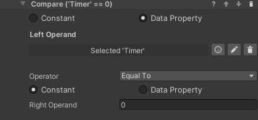

Time Tracking
This add-on allows creating and managing timers which can be used for tracking performance or changing the state of the process. This is done mostly through the Start Timer and Stop Timer behaviors. Those interact with a Timer Property on a game object, which in turn stores the elapsed time (in seconds) in a Number Data Property. Since the time is stored in a standard property, it is possible to use it as any numerical data, for example by dragging the timer game object in a Compare Values condition, and to display it in the scene like other data properties.
Start Timer Behavior
This behavior tells a Timer Property to start counting time in the attached Number Data Property, adding to the value already stored there. If Is countdown is selected, the timer will count down instead, and stop when zero is reached.
Stop Timer Behavior
This behavior stops a running timer. It does nothing on a Timer Property that is not running. The Number Data Property will store the time at which the timer was stopped, and if the timer starts again it will start counting from that value.
Resetting a Timer
Since a timer stores its data in a Number Data Property, a timer can be reset to 0 (or whatever default) by executing the Reset Value (or the Set Number) behavior on the timer's game object.
Timer at Zero Condition
It may be common to need a condition that completes when a timer reaches zero. Since the time is stored in a Number Data Property, no specific tool is needed - simply use a Compare Numbers Condition to check if the time is equal to zero. In fact, you can compare the stored time to any value, keeping in mind that the time is stored in seconds.

Displaying Time
Timers store their value in seconds in a Number Data Property. This means that of course a Number Display prefab will show that value. There is however one more prefab created specifically to show time: the Time Display shares many similarities with the Number Display but treats the value as time. By default it displays time in the mm:ss format, but that can be changed by editing the Text field. Since the field uses .NET formatting rules, it is possible to customize the time format as detailed here.